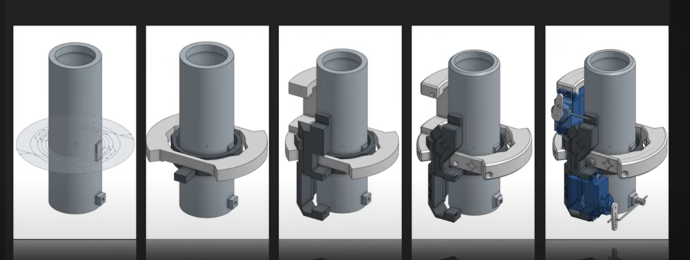
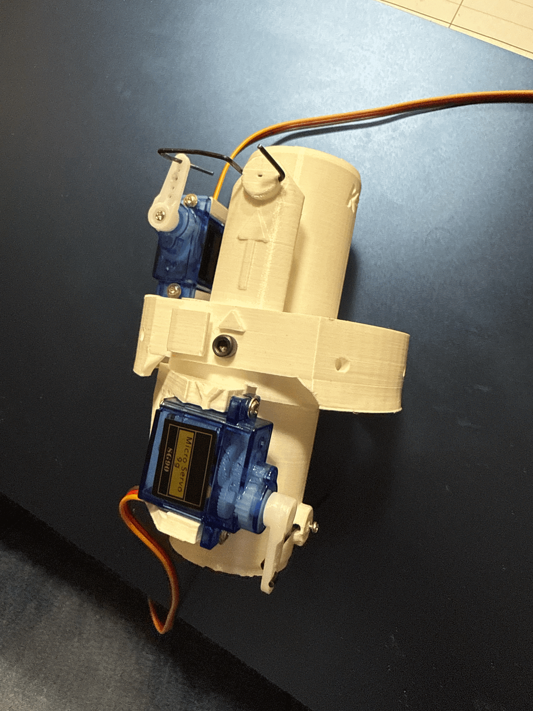
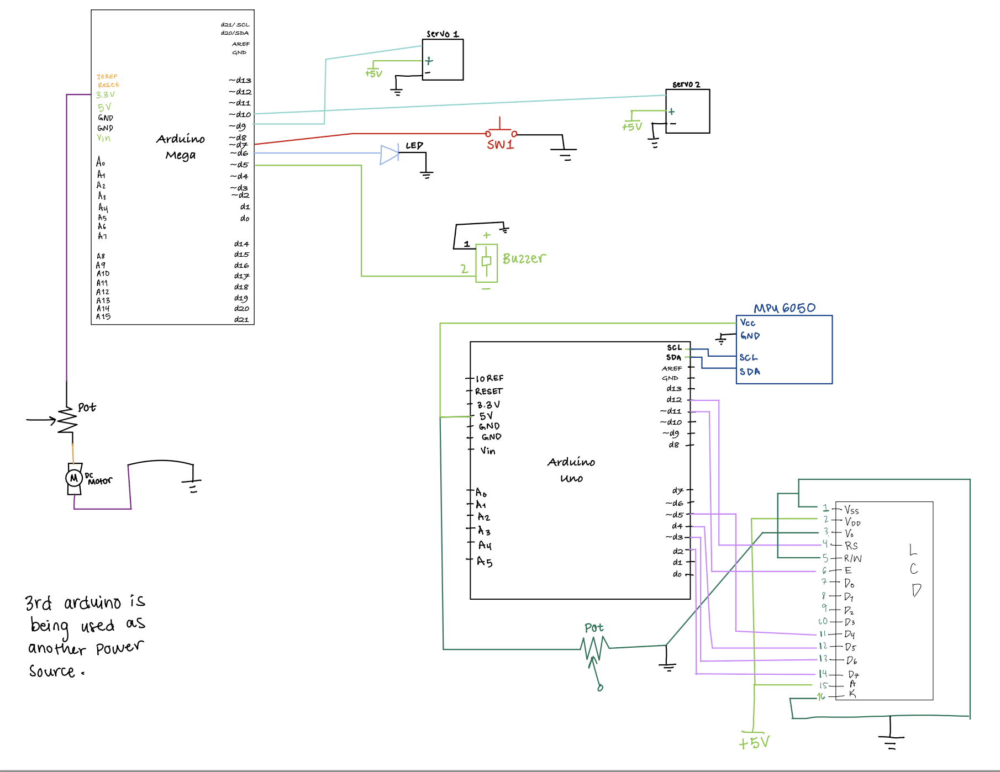
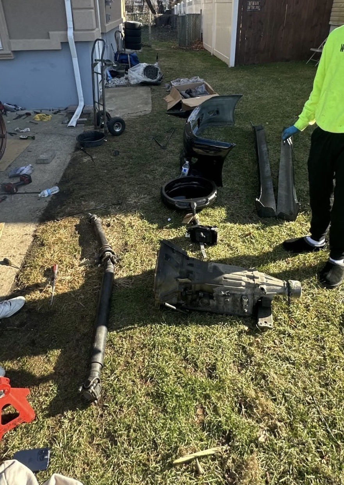
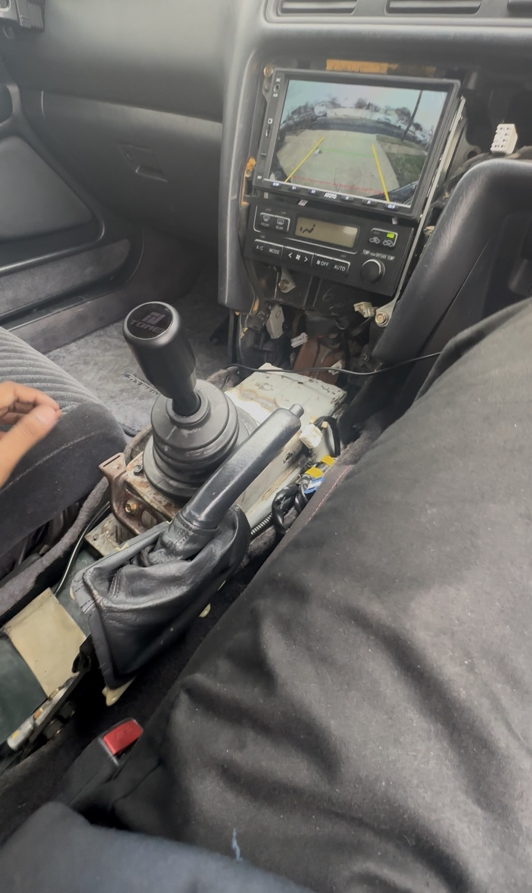
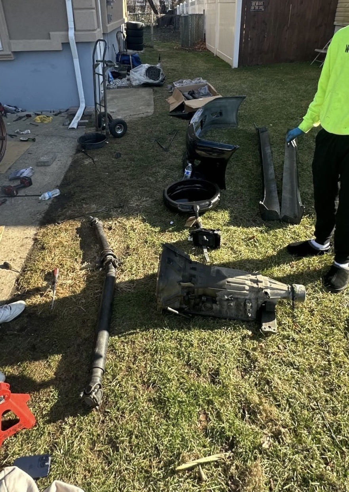
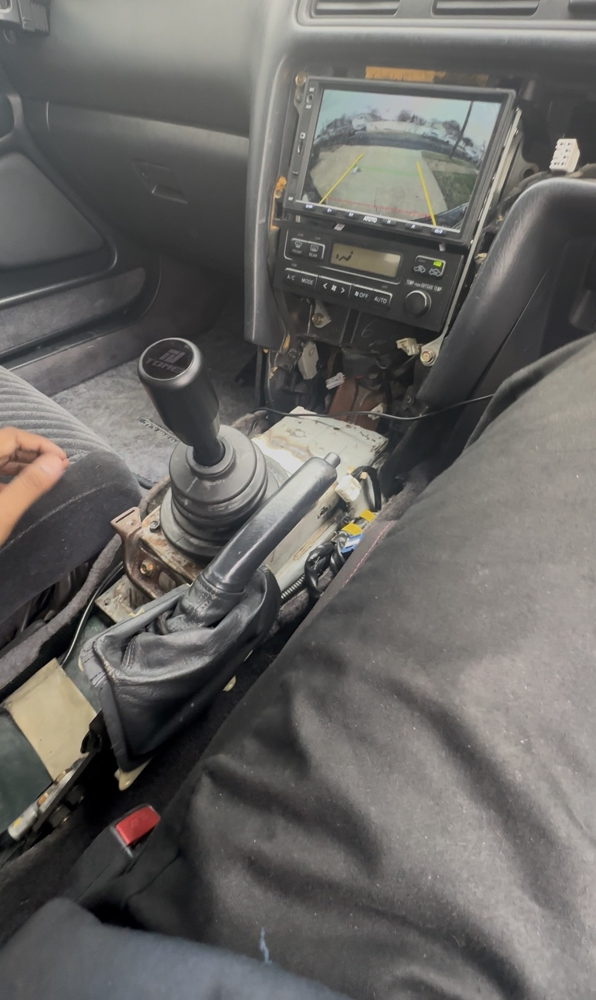

Thrust Vector Control (TVC) Prototype
Objective: Build a small-scale thrust-vectoring gimbal to simulate rocket steering and study dynamic stability.
My role: Co-led design, mechanical layout, and control logic implementation for the two-axis gimbal.
-
Process:
- Sketched concepts and selected a two-axis gimbal architecture sized for servo torque, stiffness, and travel limits.
- Modeled and 3D-printed the gimbal in SolidWorks, iterating clearances and mounting features for the motor and IMU.
- Integrated an MPU6050 IMU and high-torque servos, routing wiring and defining hard-stop angles.
- Programmed an Arduino control loop processing 100+ IMU readings per second with an auto-zero routine.
-
Outcome:
- Achieved repeatable thrust vectoring within ~1–2° of commanded angle for lab-scale rocket simulations.
- Created a reusable testbed for validating control algorithms before flight hardware is built.



SolidWorks
Arduino C
IMU integration
3D printing
 


